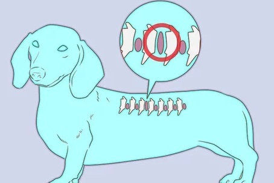

ダックスフンドのケアと健康状態についての詳しいガイドです
一般的なケア:
- 食事と栄養:
- バランスの取れた食事: 年齢、サイズ、活動レベルに応じた高品質のドッグフードを与えます。最適な食事については獣医に相談してください。
- ポーション管理: ダックスフンドは肥満になりやすいので、体重を監視し、食事の量を調整します。過剰な餌やおやつを避けましょう。
- 運動:
- 定期的な運動: ダックスフンドは健康で幸せでいるために毎日の運動が必要です。短い散歩や遊びの時間が重要です。フェッチなどの活動も、心の刺激を与えるのに役立ちます。
- 過度なジャンプを避ける: 長い背中のため、高い場所からのジャンプを避け、脊椎の怪我を減らします。階段の代わりにランプを使用することをお勧めします。
- グルーミング:
- コートのケア: コートの種類（スムース、ロングヘア、ワイヤーヘア）によってグルーミングの必要が異なります。スムースコートはあまり手入れが必要ありませんが、ロングヘアのダックスフンドはもつれを防ぐために定期的なブラッシングが必要です。
- 爪のトリミング: 定期的に爪をトリミングして、過剰な成長を防ぎ、不快感や移動問題を防ぎます。
- 耳の掃除: 特にロングヘアのダックスフンドでは、湿気がたまりやすいため、耳を定期的にチェックして掃除します。感染を防ぐために重要です。
- 歯のケア:
- 歯磨き: 定期的に歯を磨いて、プラークの蓄積や歯周病を防ぎます。デンタルチューやおもちゃも口腔衛生を維持するのに役立ちます。
- トレーニングと社会化:
- 基本的なコマンド: 「おすわり」や「まて」、「こい」などの基本的なコマンドを訓練します。ポジティブな強化が最も効果的です。
- 社会化: 幼いころから他の犬や人、さまざまな環境に慣れさせることで、よい性格の成犬に育ちます。

健康状態に関する考慮事項:
- 脊椎の健康:
- 椎間板ヘルニア（IVDD）: 長い背中のため、脊椎の問題が発生しやすいです。背中に過度な負担をかける活動（ジャンプや階段の上り下り）を避けるようにします。可能であれば、ランプを使って階段を避けるとよいです。。
- 体重管理: 健康的な体重を維持して脊椎にかかるストレスを減らします。肥満は脊椎の問題を引き起こすリスクがあります。。
- 定期的な獣医の診察:
- 定期検査: 全体的な健康を監視し、早期に問題を対処するために定期的な獣医の診察を受けます。
- 予防接種と寄生虫対策: ワクチン接種を最新の状態に保ち、ノミやダニ、心臓虫の予防措置を講じます。
- 病気の兆候:
- 健康の監視: 食欲の変化、元気の喪失、歩行困難、異常な行動などの症状に注意します。症状が現れた場合は、迅速に獣医の診察を受けることが重要です。
- 遺伝的な健康問題:
- 繁殖に関する問題: ダックスフンドには心臓病や特定のがんなど、遺伝的な健康問題がある場合があります。責任ある繁殖方法を選ぶことがリスクを最小限に抑える助けになります。
- 目の健康:
- 目のチェック: 目の刺激、赤み、分泌物などの兆候を定期的にチェックします。ダックスフンドの中には特定の目の状態にかかりやすいものもいるため、目の健康を監視することが重要です。。
ダックスフンドに適切なケアを提供し、健康的な食事、定期的な運動、注意深い健康管理を行うことで、長く幸せで健康な生活を送ることができます。定期的な獣医の診察と予防的なケアが、この犬種特有のニーズや健康問題の管理に役立ちます。